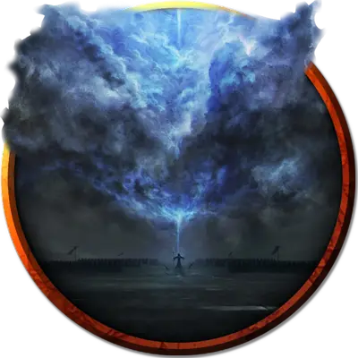

Колыбель штормового отпрыска
Cradle of the Storm Scion
Громадный Элементаль, обычно хаотично-добрый

Класс Доспеха 19 (природный доспех)
Хиты 682 (35к20 + 315)
Скорость 40 футов, плавая 60 футов, летая 60 футов (парит)
| мод | спас | ||
|---|---|---|---|
| СИЛ | 30 | +10 | +10 |
| ЛОВ | 14 | +2 | +2 |
| ТЕЛ | 29 | +9 | +9 |
| мод | спас | ||
|---|---|---|---|
| ИНТ | 16 | +3 | +3 |
| МДР | 23 | +6 | +6 |
| ХАР | 18 | +4 | +4 |
Сопротивление урону звук, огонь, холод; дробящий, колющий, рубящий от немагических атак
Иммунитет к урону электричество, яд
Иммунитет к состояниям захват, истощение, окаменение, опутанность, отравление, ошеломление, паралич, сбивание с ног
Чувства пассивное Восприятие 16
Языки Великаний, Первичный
Опасность 27 (105000 опыта)
Бонус мастерства +8
Особенности
Пробуждение отпрыска. Колыбель - это сосуд отпрыска Стронмауса [scion of Stronmaus]. Когда хиты колыбели уменьшаются до 0, её остов взрывается вспышкой света. Отпрыск мгновенно появляется в том пространстве, которое занимала колыбель, и использует инициативу колыбели.
Легендарное сопротивление (5/день). Если колыбель проваливает спасбросок, она может вместо этого сделать спасбросок успешным.
Сопротивление магии. Колыбель совершает с преимуществом спасброски от заклинаний и прочих магических эффектов.
Осадный монстр. Колыбель наносит двойной урон объектам и сооружениям.
Действия
Мультиатака. Колыбель совершает три атаки Размашистым ударом или Плевком градом в любой их комбинации.
Размашистый удар. . Рукопашная атака оружием: + 18 к попаданию, досягаемость 20 футов, одна цель. Попадание: 36 (4к12 + 10) дробящего урона плюс 19 (3к12) урона электричеством.
Плевок градом. . Дальнобойная атака оружием: +18 к попаданию, дистанция 120 футов, одна цель. Попадание: 32 (4к10 + 10) дробящего урона плюс 14 (4к6) урона холодом, и цель должна преуспеть в спасброске Силы Сл 26, иначе упадёт ничком.
Шквал молний (перезарядка 5-6). Колыбель метает множество магических молний в двух существ, которых она может видеть в пределах 500 футов от себя. Каждая цель должна совершить спасбросок Ловкости Сл 22. В случае провала цель получает 71 (11к12) урона электричеством и становится ошеломлённой до конца своего следующего хода. В случае успеха цель получает только половину этого урона.
Реакции
Громовой шаг. Сразу после получения урона колыбель с грохотом разлетается, а затем волшебным образом телепортируется до 60 футов в видимое ей незанятое пространство. Каждое существо в пределах 10 футов от места, оставленного колыбелью, должно совершить спасбросок Телосложения Сл 22, получая 14 (4к6) урона звуком в случае провала или половину этого урона в случае успеха.
Описание
Отпрыск Стронмауса часто дремлет высоко в небе или глубоко в океане, где суматоха, вызываемая беспокойным сном отпрыска, мало влияет на окружающий мир. Если он дрейфует слишком близко к земле или поверхности океана, это вызывает сильные штормы или свирепые водовороты. Сон наследника наполнен снами, варьирующимися от вдохновляющих видений возвращения Аннама до меланхоличных пророчеств о неизбежном упадке, от радостных проблесков идиллического прошлого до ужасающих кошмаров о мучениях и опустошении.
Колыбель штормового отпрыска начинает действовать не только тогда, когда отпрыску угрожает опасность, но и в том случае, если сон отпрыска нарушен кошмарами. Когда колыбель пробуждается, она приобретает форму смутно напоминающую великана, состоящую из яростно кружащихся воздуха, воды и льда.
Если колыбель разрушена, отпрыск Стронмауса внутри нее пробуждается. Одно из самых могущественных созданий всего рода великанов, отпрыск достигает 80 футов в высоту. Он часто находит некоторое облегчение в пробуждении и освобождении от своих тревожных снов, поэтому не обязательно прибегает к насилию, когда выходит из своей колыбели. Но его не особенно интересуют гуманоиды или другие маленькие существа — ни общение с ними, ни защита от вреда, который они могут причинить.
Если отпрыску угрожает опасность, он высвобождает мощь стихий, на которую способны немногие другие силы в мультивселенной: клинки молний, градины размером с валун и ураган из бушующих стихий.